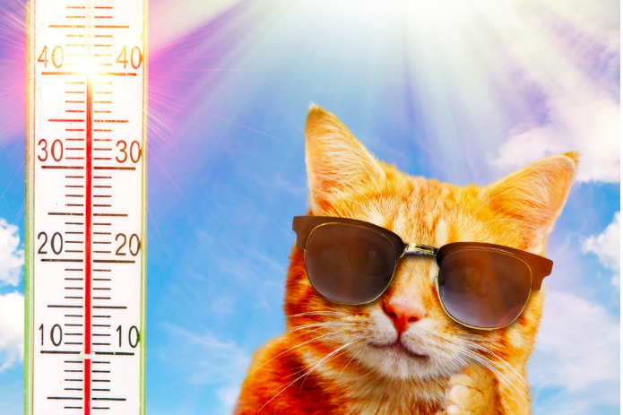

remotes::install_github("isabel6198/olympicsWeather")Package olympicsWeather
Prévisions météorologiques des sites olympiques
Package
Le package olympicsWeather offre une solution simple et interactive pour accéder aux prévisions météorologiques des sites olympiques. Utilisant des graphiques interactifs, il permet aux utilisateurs d’explorer en profondeur les données météorologiques.

© Illustration AdobeStock
Caractéristiques
Graphiques interactifs : Grâce à
plotly, le package produit des visualisations interactives des données météorologiques, améliorant ainsi l’expérience utilisateur par une exploration dynamique des prévisions.Facilité d’utilisation : Les prévisions sont accessibles via des coordonnées GPS ou des noms de lieux, facilitant l’accès aux données météorologiques sans expertise technique spécifique.
Intégration de packages R :
olympicsWeathers’appuie sur des packages tels quehttrpour les requêtes web,jsonlitepour le traitement JSON, ettibblepour la manipulation de données, optimisant ainsi le processus d’analyse.
Installation
Le package olympicsWeather est disponible sur GitHub et peut être installé en utilisant le package remotes. Si vous n’avez pas encore installé remotes, commencez par le faire avec la commande install.packages("remotes").
Ensuite, installez olympicsWeather en utilisant la commande suivante :
Fonctions
Les fonctions qui sont incluses dans le package sont :
perform_request: Envoie une requête à l’API Open-Meteo avec des coordonnées GPS et retourne les données météorologiques horaires sous forme de tibble.unnest_data: Transforme les données météorologiques brutes en un tibble structuré, extrayant des informations telles que la date, l’heure, et les températures.get_forecast: Fonction générique qui, selon le type d’entrée (adresse ou coordonnées GPS), renvoie des prévisions météorologiques sous forme de tibble.address_to_gpsetget_gps_coordinate: Convertissent une adresse textuelle en coordonnées GPS à l’aide du service de géocodage OpenStreetMap.get_forecast.numericetget_forecast.character: Spécialisentget_forecastpour traiter respectivement des coordonnées GPS numériques et des adresses textuelles, renvoyant les prévisions météorologiques pour l’emplacement spécifié.visualiser_temperatures: Crée un graphique interactif avecplotlyà partir d’un tibble météorologique, affichant la température et la température ressentie au fil du temps.
Chaque fonction est conçue pour simplifier l’accès et la manipulation des données météorologiques, depuis la récupération des informations depuis une API externe jusqu’à la visualisation interactive des prévisions.
Exemples
Site: le stade de France
# librairie
library(olympicsWeather)
# Obtenir les prévisions météorologiques à partir d'un lieu exacte
meteo <- get_forecast("Stade de France, Saint-Denis, France")
meteo# A tibble: 168 × 5
date_heure temperature_celsius temperature_ressentie
<dttm> <dbl> <dbl>
1 2024-09-28 00:00:00 11.1 9.5
2 2024-09-28 01:00:00 10.6 9.3
3 2024-09-28 02:00:00 9.7 7.9
4 2024-09-28 03:00:00 8.8 7
5 2024-09-28 04:00:00 8.2 6.3
6 2024-09-28 05:00:00 8 6.2
7 2024-09-28 06:00:00 7.7 5.9
8 2024-09-28 07:00:00 8.5 6.7
9 2024-09-28 08:00:00 10.2 8.2
10 2024-09-28 09:00:00 12.1 10.1
# ℹ 158 more rows
# ℹ 2 more variables: precipitation_proba <int>, precipitation_mm <dbl># Visualer les données
graphique <- visualiser_temperatures(meteo)
graphiqueCoordonnées GPS
# Obtenir les prévisions météorologiques à partir de Coordonnées GPS
gps <- c( 43.276703, 5.334791)
# Obtenir les prévisions météorologiques
meteo <- get_forecast(gps)
meteo# A tibble: 168 × 5
date_heure temperature_celsius temperature_ressentie
<dttm> <dbl> <dbl>
1 2024-09-28 00:00:00 16.9 11.8
2 2024-09-28 01:00:00 16.8 11.5
3 2024-09-28 02:00:00 16.8 11.4
4 2024-09-28 03:00:00 15.9 11.9
5 2024-09-28 04:00:00 15.6 11
6 2024-09-28 05:00:00 16 10.5
7 2024-09-28 06:00:00 15.9 10.3
8 2024-09-28 07:00:00 16.1 10
9 2024-09-28 08:00:00 16.8 10.1
10 2024-09-28 09:00:00 17.8 11.3
# ℹ 158 more rows
# ℹ 2 more variables: precipitation_proba <int>, precipitation_mm <dbl># Visualer les données
graphique <- visualiser_temperatures(meteo)
graphiqueTahiti
# Obtenir les prévisions météorologiques
meteo <- get_forecast("Tahiti")
# Visualer les données
graphique <- visualiser_temperatures(meteo)
graphique